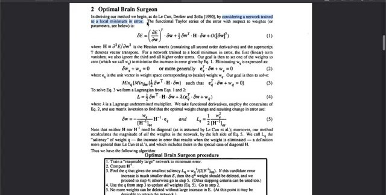
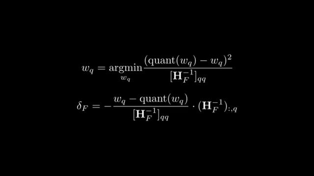

The Hessian update, and which X it expects
The previous note left two formulas unnamed: which weight to snap, and how to move the weights that are still free. Both come from a quadratic model of the layer error. The quadratic is the Hessian. The annoying part, and the part that stalled the video's author, is that the paper writes the linear layer as $WX$ and the Hessian as $2XX^{\mathsf T}$. A PyTorch linear activation is not shaped for that product unless you transpose it first.
Two layouts, two Hessians

The paper's objective is consistent inside its own convention. $W$ is $d_{\text{row}}\times d_{\text{col}}$, $X$ is $d_{\text{col}}\times n$ calibration tokens, and the layer is $Y=WX$. One row $w$ of $W$ produces one output channel. Its squared error is $\lVert wX-\hat w X\rVert^2$, so the Hessian with respect to that row is
$F$ is the set of columns that are still full precision. $H_F$ is $d_{\text{col}}\times d_{\text{col}}$. It does not depend on $w$. Every output row shares it. That is why a later column-wise schedule can update the inverse once per column instead of once per weight.
A PyTorch nn.Linear stores the weight as $(\text{out},\text{in})$ and computes $y=xW^{\mathsf T}$, with $x$ shaped $(\text{samples},\text{in})$. If you drop that $x$ into the paper formula and form $2xx^{\mathsf T}$, you get a samples-by-samples matrix. The Hessian that matches the paper, for this layout, is $2x^{\mathsf T}x$.
The video calls the paper's wording a mistake: it presents $WX$ as the linear-layer forward, and that product is the convolutional, left-multiply convention. Inside $Y=WX$ the algebra is not wrong. The bug is real if you implement the printed formula on a PyTorch activation without transposing. The Hessian comes out transposed, or the wrong shape entirely, and the weight update steps in the wrong coordinates.
The authors' code does the transpose. In add_batch, a linear or Conv1D input is reshaped to $(\text{tokens},\text{in})$ and then transposed, so the stored matrix is $(\text{in},\text{tokens})$. The accumulation is inp @ inp.T, with a $\sqrt{2/n}$ scale so the result matches $2XX^{\mathsf T}$ in the paper's orientation. Conv2d does not take that transpose. It unfolds patches, which is already the left-multiply layout. The video also shows a torchao GPTQ file doing the linear transpose. I read the authors' file. Treat the torchao path as the video's second check, not as a line I am citing from the current library tree.
Practical rule: build $H=2XX^{\mathsf T}$ only after $X$ is $(\text{in},\text{tokens})$. If your tensor is $(\text{tokens},\text{in})$, transpose first, or build $2X^{\mathsf T}X$ and do not also transpose.
Why a second derivative picks a step size

The Hessian of a scalar function is the matrix of second partial derivatives. Here the function is the layer's squared reconstruction error, not the training loss, unless you are back in the pruning paper.
A first derivative at a point is a slope. If that linear approximation were the whole function, the downhill direction would have no finite step: the line keeps descending. The pictures in the video make that concrete. A slope of 2.11 tells you which way is down. It does not tell you where the curve turns.


Newton's method is this idea as an algorithm: fit the local quadratic, step to its minimum. Neural-network training usually does not form the full Hessian. It is too big, and the training loss is not the quadratic GPTQ assumes. GPTQ can form this Hessian because, for one layer, $H=2XX^{\mathsf T}$ is the size of the input dimension, and $X$ is a calibration batch rather than the whole pretraining corpus.
That quadratic is where Optimal Brain Surgeon starts. The video leaves the GPTQ formulas on screen and derives them from the 1993 pruning paper, then changes the target from zero to a grid point. The next section is that derivation. The formulas after it are the same algebra with the grid substituted in.
The Optimal Brain Surgeon equations

OBS prunes. It deletes one weight and moves the others so the training loss barely changes. Three moves get from the Taylor series to the update.
First, the network is assumed to sit at a local minimum of the training error. The gradient is then zero: you are at the bottom of a valley, so the linear term has nothing to say. For the quantization objective this assumption is free. The full-precision weights already have zero reconstruction error, so they are the minimum of $\lVert WX-\widehat W X\rVert^2$ whether or not training had fully converged.
Second, expand the loss for a weight step $\delta w$:
The first term is zero at the minimum. OBS drops the third-order remainder. What remains is the quadratic,
$H$ is the Hessian of that error, not a learning-rate heuristic. For one layer it is $2XX^{\mathsf T}$ once $X$ has the paper's orientation.
Third, write the prune as a constraint. Setting weight $q$ to zero means the step on that coordinate is the opposite of the current weight, $\delta w_q=-w_q$. In the paper's unit-vector form, $e_q$ is 1 in position $q$ and 0 elsewhere, and the constraint is
The problem is then: choose the coordinate $q$ and the step $\delta w$ that minimize the quadratic, subject to that one linear constraint. OBS forms the Lagrangian
Differentiate with respect to $\delta w$ and set the result to zero: $H\,\delta w+\lambda e_q=0$, so $\delta w=-\lambda H^{-1}e_q$. Put that back into the constraint. The only surviving entry of $H^{-1}e_q$ is the diagonal $[H^{-1}]_{qq}$, which fixes the multiplier, $\lambda=w_q/[H^{-1}]_{qq}$. The step and the resulting increase in error are
$L_q$ is the saliency. It is the extra loss of deleting weight $q$ and applying the optimal repair. OBS deletes the weight with the smallest saliency, applies $\delta w$, then removes that coordinate from $H$ and repeats. Neither $H$ nor $H^{-1}$ has to be diagonal. The inverse's off-diagonal entries are what move the other weights. A diagonal approximation would delete a weight and leave the rest alone, which is the earlier Optimal Brain Damage method the OBS paper is replacing.
On the three-weight example below, deleting the middle weight instead of snapping it sets $w_1$ to 0. The same formula moves the vector from $(1.20,-0.85,0.40)$ to $(0.601437,\,0,\,0.497439)$. The saliency is $0.099238$, and that equals the output squared error after the repair. tools/check_gptq_update.py checks it against the constrained least-squares solve that holds coordinate 1 at 0.
Same Lagrangian, grid target instead of zero
Quantization does not have one legal value. An 8-bit grid has 256 of them. A 4-bit grid has 16. The video's substitution is to keep the Lagrangian and change the constraint. You no longer add $-w_q$ so the coordinate lands on 0. You add $\operatorname{quant}(w_q)-w_q$ so it lands on the chosen grid point:
The algebra is unchanged if $w_q$ in the pruning formulas is replaced by $w_q-\operatorname{quant}(w_q)$. The repair and the extra error become
That is the update in the GPTQ paper. The saliency is the stored quantization error for that row: the extra MSE of snapping it and adjusting the floating-point weights that remain. The paper's selection score drops the factor $\tfrac12$. Ranking is unchanged. Comparing the score with a raw $\lVert Y-\hat Y\rVert^2$ is not, which is why the example's winning score is $0.006181$ and the output squared error after the repair is $0.003090$.
For a fixed denominator, the grid point that minimizes $L_q$ is the nearest one. You do not search all 256 integers. You snap to the nearest grid point, store $L_q$, and among the remaining rows pick the smallest stored error. Then you apply $\delta w$. Optimal Brain Compression is this substitution, written out for quantization and pruning together. The video points there if you want the quantization paper's own derivation rather than the pruning derivation with the target changed at the end.
The pick, and the update

$\operatorname{quant}(w_q)$ is the grid point you will snap to. The denominator is the matching diagonal entry of the inverse Hessian, not of $H$ itself. Using $H_{qq}$ in that slot is a different, and wrong, update. The column $(H_F^{-1})_{:,q}$ spreads the correction across every free weight, including $w_q$. On coordinate $q$ the correction equals $\operatorname{quant}(w_q)-w_q$, so the formula itself lands on the grid point. You do not snap first and then add a second correction to that same entry.
Pruning is the special case where the only legal value is 0. Quantization changes the target, not the shape of the solution. Once the target is fixed, you are solving a quadratic with one coordinate constrained. The score above is the extra quadratic error of the best such constraint. OBQ picks the coordinate with the smallest score. GPTQ will stop picking and take coordinates in order. The update formula does not change.
One constant is easy to drop. The paper's score uses $H=2XX^{\mathsf T}$. The output squared error $\lVert X\delta\rVert^2$ equals $\tfrac12\delta^{\mathsf T}H\delta$ when you expand around the full-precision weights. So the printed score is twice the output squared error. The factor of 2 does not change which weight wins. It does change the number if you compare the score with a raw $\lVert Y-\hat Y\rVert^2$.
Three weights, checked
This example is constructed. Five calibration rows, one output, grid points at half-integers from $-1$ to $1$. $X$ is stored as PyTorch would store it, $(\text{samples},\text{in})$.
| Row | $x_0$ | $x_1$ | $x_2$ |
|---|---|---|---|
| 1 | 1.0 | 0.8 | 0.1 |
| 2 | 1.1 | 0.7 | $-0.2$ |
| 3 | 0.9 | 0.9 | 0.0 |
| 4 | 1.2 | 0.6 | 0.3 |
| 5 | 0.4 | 0.2 | 1.0 |
The full-precision weights are $w=(1.20,-0.85,0.40)$. After transposing, $H=2X^{\mathsf T}X$ is
The same matrix is $2X_{\text{paper}}X_{\text{paper}}^{\mathsf T}$ if $X_{\text{paper}}=X^{\mathsf T}$. That is the layout check.
| Column | Weight | Grid point | Score |
|---|---|---|---|
| 0 | 1.20 | 1.0 | 0.020806 |
| 1 | $-0.85$ | $-1.0$ | 0.006181 |
| 2 | 0.40 | 0.5 | 0.019105 |
Read that table as one pass of the video's loop. The calibration rows were fed through the layer. The three scores are the stored quantization errors, the extra MSE of snapping each remaining weight and applying the optimal adjustment. The smallest stored error is 0.006181, so column 1 is the row you quantize, from $-0.85$ to $-1$. The other two weights are still floating point, and they are the ones you adjust.
The update is $\delta=-(w_1-(-1))/[H^{-1}]_{11}\cdot(H^{-1})_{:,1}$, which evaluates to $(0.105629,-0.150000,-0.017195)$. The new weights are $(1.305629,-1,0.382805)$. Column 1 is on the grid. Columns 0 and 2 moved.
Snapping column 1 and leaving the others alone gives output squared error 0.05265. The compensated weights give 0.00309, which is half the winning score, as the factor-of-2 remark predicted. Those free weights also match the least-squares solution that holds column 1 at $-1$ and refits the other two. tools/check_gptq_update.py asserts both comparisons. This is not a claim about a 7B model. It is a check that the formula you implement is the constrained quadratic, not a proportional nudge by $H_{qq}$.
Do not invert the remaining Hessian from scratch

You need $H^{-1}$, not $H$, for the next score and the next update. Rebuilding $H$ from the remaining columns and inverting it is correct and expensive. One step of Gaussian elimination on the inverse removes coordinate $q$ directly. On the example above, that reduced inverse matches $ (2X_{\text{remaining}}^{\mathsf T}X_{\text{remaining}})^{-1} $ to numerical noise. The check script asserts that too.
A 4096-wide projection has a $4096\times 4096$ inverse. Doing this elimination once per weight, and once per row, is the cubic cost from the previous note. The next note is how GPTQ stops repeating it.
The paper prints $2XX^{\mathsf T}$. Should I patch the PDF before using GPTQ?
No. Orient $X$ as $(\text{in},\text{tokens})$, which is what the authors' linear path does by transposing, and the printed formula applies. Patching the PDF and also transposing will transpose twice.
Why is the compensated error half the score?
Because $H=2X^{\mathsf T}X$, and the output squared error is $\tfrac12\delta^{\mathsf T}H\delta$ at the full-precision point. Rank weights by the score, or by the squared error. Do not mix the two numbers in a log.
Can I use the diagonal of $H$ instead of $H^{-1}$?
Only as a different method. The OBQ update is a column of the inverse. The diagonal of $H$ ignores the correlation the whole construction is there to use. On this example the two updates are not the same vector.
Sources
- Frantar et al., GPTQ, equations (1) to (3). Objective, greedy score, update, and the inverse removal.
- Authors'
gptq.py,add_batch: linear inputs are transposed beforeinp @ inp.T. - Savolainen's walkthrough, from 15:14. The OBS equations on the paused paper page, the substitution from zero to a grid point, and the earlier layout and Taylor frames.
- Hassibi, Stork, and Wolff, Optimal Brain Surgeon and general network pruning, NeurIPS 1992. Equations (1) to (5): the Taylor expansion, the zero constraint, the Lagrangian, the update, and the saliency $L_q$.
- Optimal Brain Compression, the same Lagrangian with a quantization-grid target instead of zero.